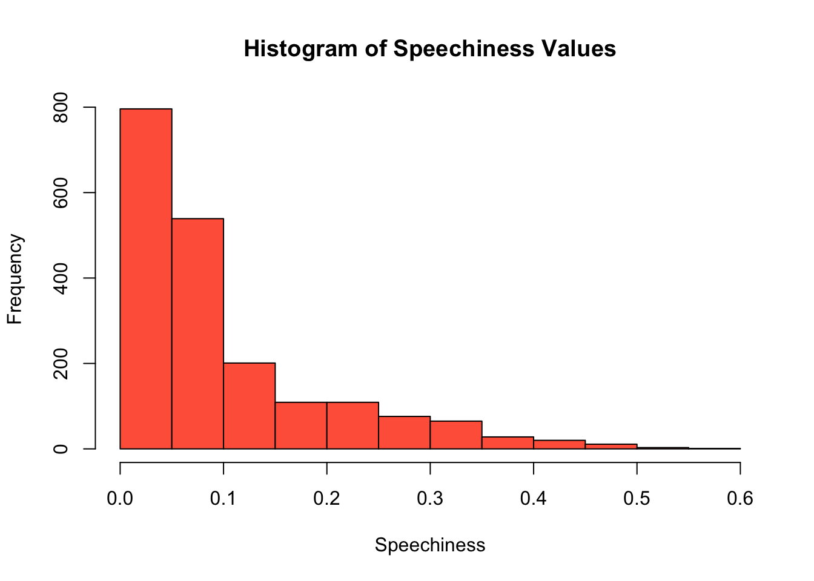

![]()
library(ggpubr) # ggplot customization
library(Rmisc) # basic statistics helper
library(gganimate) # animate plots
library(scales) # ggplot scale customization
library(icons) # icon library
library(tidyverse) # load all tidyverse packages
theme_set(theme_classic()) # set classic theme
download_fontawesome()Data Visualizations in R
Data Viz
R
Open Data
Using open-source data and
tidyverse packages, this demo explores different data wrangling and plotting techniques in R.
This demo uses an open-source dataset to explore different data wrangling and plotting techniques in R. Data organization is hugely important because it can impact the quality and accuracy of any statistical tests or visualizations. A popular collection of data organization packages is the tidyverse, which all share an “underlying design philosophy, grammar, and data structure” (see more).
The basic structure of tidy data is every variable goes into a column and every column is a variable. Using this framework, we can manipulate the data to calculate new values, run statistical tests, and generate a graphic. In this demo, I will primarily use dplyr, ggplot2, and tidyr to organize my data and make some beautiful plots. I will be using the Top Hits Spotify from 2000 - 2019 dataset, available on Kaggle.
Load packages and data
First, I will load the packages I need. If you do not already have tidyverse packages installed on your computer, you should install them using install.packages('tidyverse') first. The other packages I’m loading will be useful for customizing my plots. I’ll also set a global theme to theme_classic.
I will also read in the dataset as df_raw and look at the first few rows to get a sense of the variables I’m working with.
# read in data
df_raw <- read.csv('./data/songs_normalize.csv')
# see first six rows of all variables
head(df_raw) artist song duration_ms explicit year popularity
1 Britney Spears Oops!...I Did It Again 211160 False 2000 77
2 blink-182 All The Small Things 167066 False 1999 79
3 Faith Hill Breathe 250546 False 1999 66
4 Bon Jovi It's My Life 224493 False 2000 78
5 *NSYNC Bye Bye Bye 200560 False 2000 65
6 Sisqo Thong Song 253733 True 1999 69
danceability energy key loudness mode speechiness acousticness
1 0.751 0.834 1 -5.444 0 0.0437 0.3000
2 0.434 0.897 0 -4.918 1 0.0488 0.0103
3 0.529 0.496 7 -9.007 1 0.0290 0.1730
4 0.551 0.913 0 -4.063 0 0.0466 0.0263
5 0.614 0.928 8 -4.806 0 0.0516 0.0408
6 0.706 0.888 2 -6.959 1 0.0654 0.1190
instrumentalness liveness valence tempo genre
1 1.77e-05 0.3550 0.894 95.053 pop
2 0.00e+00 0.6120 0.684 148.726 rock, pop
3 0.00e+00 0.2510 0.278 136.859 pop, country
4 1.35e-05 0.3470 0.544 119.992 rock, metal
5 1.04e-03 0.0845 0.879 172.656 pop
6 9.64e-05 0.0700 0.714 121.549 hip hop, pop, R&BBased on the data, it looks like I have 18 variables. These are further explained on the Kaggle page for this dataset. This is a lot of data, so it’s useful to break down and organize the data depending on my analysis questions. This is where dplyr and tidyr come in handy.
I also noticed that despite the dataset saying it includes songs from 2000 to 2019, I see some songs from before 2000 and after 2019 included. I will remove those observations.
df <- subset(df_raw, df_raw$year >= 2000 & df_raw$year <= 2019)Analysis plan
Since I have so much data, I’ll want to narrow down my analysis questions for this demo. The main questions I will explore are:
Which artists have the most hit songs?
Are positive songs more energetic and danceable than negative songs?
Do songs in major and minor scale change in popularity over time?
Are songs with explicit lyrics speechier than songs without explicit lyrics?
Does song tempo or duration influence song popularity?
Each of these questions will highlight a different data visualization method. In my experience, it can be helpful to test different plotting methods to find the best way to display results.
– Which artists have the most hit songs?
In order to find out which artists have the most hit songs, I need to count the number of songs by every artist in the data frame. I can easily do this using %>% (pipe) notation, which allows me to express a sequence of multiple operations. The pipe comes from the magrittr package, but tidyverse loads it automatically. Pipes allow me to write a step-by-step command that is executed in a certain order.
Here, I gather the data contained in df and I ultimately want to store it in a new data frame called artists. To do this, I first group all the data by the unique artist name. I know that this is the first step because it’s the first statement that comes after my initial %>%. Then, while grouping the data by artist, I can count the number of songs by grabbing the length of the song variable.
Finally, I want to see a list of the top ten artists in descending order by the number of songs.
artists <- df %>% # create new data frame
group_by(artist) %>% # group by unique artist name
summarize(SongCount = length(song)) # count the number of songs
# sort list in descending order of number of songs
artists <- arrange(artists, desc(SongCount))
# print table of top 10 artists
head(artists, n = 10)# A tibble: 10 × 2
artist SongCount
<chr> <int>
1 Rihanna 25
2 Drake 23
3 Eminem 21
4 Calvin Harris 20
5 Britney Spears 18
6 David Guetta 18
7 Chris Brown 17
8 Kanye West 17
9 Beyoncé 16
10 Katy Perry 16To visualize this information in a plot, I can save this information as a data frame and make a very simple plot using ggplot2.
# save top ten
TopTen <- head(artists, n = 10)
ggplot(TopTen, aes(x = artist, y = SongCount)) +
# outline bars in black, fill with light teal blue
geom_col(color = "black", fill = "#fcbc66", alpha = 0.8) +
# order bars in descending order and wrap text so last name appears on second line
scale_x_discrete(limits = TopTen$artist, labels = function(x) str_wrap(x, width = 10)) +
# label x axis
xlab(NULL) +
# label y axis
ylab("Number of Hit Songs") +
# write a descriptive title
ggtitle("Top Ten Artists with Hit Songs on Spotify from 2000 - 2019") +
# add song count value above each bar
geom_text(aes(label = SongCount), position = position_dodge(width = 0.9), vjust = -0.5) – Are positive songs more energetic and “danceable” than negative songs?
In order to determine if positive songs are both more energetic and more “danceable” than negative songs, I first want to binarize valence into two categories – positive and negative. The Kaggle dataset mentions that songs with a valence greater than 0.5 are considered more positive, while songs with a valence that is less than 0.5 are considered more negative. With this in mind, I will create a new variable called valence.category that reflects this binary split.
I also want to get some statistical measures for my plot. Using summarySE from the Rmisc package, I can calculate mean, standard deviation, standard error, and 95% confidence intervals for a measurement variable while grouping by another variable. In this case, I want to calculate these statistical measures for both danceability and energy while grouping by the newly created valence.category.
# bin valence values into positive and negative categories
df$valence.category[df$valence >= 0.5] <- "Positive"
df$valence.category[df$valence < 0.5] <- "Negative"
# get stats for danceability and energy (mean, 95% confidence interval, etc.)
dance <- summarySE(df, measurevar = "danceability", groupvars = "valence.category")
energy <- summarySE(df, measurevar = "energy", groupvars = "valence.category")Now I can create my plot! I will be making a violin plot to show not only the mean difference between my valence groups, but also what the distribution is within my two valence categories. I will create a plot for energy and for danceability, and combine those into one joint plot using ggarrange.
# build violin plot for danceability
dance.plot <- ggplot(data = df, aes(x = valence.category, y = danceability,
fill = valence.category, color = valence.category)) +
# violin plot
geom_violin(scale = "area", alpha = 0.8) +
# fill with my selected colors
scale_fill_manual(values = c("#8dc6bf","#fcbc66")) +
scale_color_manual(values = c("#8dc6bf","#fcbc66")) +
# add point for mean of each valence category
geom_point(data = dance, aes(x = valence.category, y = danceability), color = "black") +
# add 95% confidence intervals
geom_errorbar(data = dance, aes(ymin = danceability-ci, ymax = danceability+ci),
width = 0.25, position = "dodge", color = "black") +
# label x axis
xlab(NULL) +
# label y axis
ylab("Danceability") +
# don't include legend
theme(legend.position = "none")
# build violin plot for energy
energy.plot <- ggplot(data = df, aes(x = valence.category, y = energy,
fill = valence.category, color = valence.category)) +
# violin plot
geom_violin(scale = "area", alpha = 0.8) +
# fill with my selected colors
scale_fill_manual(values = c("#8dc6bf","#fcbc66")) +
scale_color_manual(values = c("#8dc6bf","#fcbc66")) +
# add point for mean of each valence category
geom_point(data = energy, aes(x = valence.category, y = energy), color = "black") +
# add 95% confidence intervals
geom_errorbar(data = energy, aes(ymin = energy-ci, ymax = energy+ci),
width = 0.25, position = "dodge", color = "black") +
# label x axis
xlab(NULL) +
# label y axis
ylab("Energy") +
# don't include legend
theme(legend.position = "none")
# combine dance plot and energy plot using ggarrange
plot <- ggarrange(dance.plot, energy.plot, ncol = 2)
# add title and note to plot
annotate_figure(plot, top = text_grob("Danceability and Energy in Positive and Negative Songs",
color = "black", face = "bold", size = 14),
bottom = text_grob("Bars indicate 95% confidence intervals around the mean.",
color = "black", face = "italic", size = 8))It looks like positive songs are both more energetic and more danceable than negative songs, which makes sense. Interestingly, negative songs extend to both the lower and higher ends of the energy and danceability scales, while positive songs tend to be more densely clustered toward the higher end of the scales.
– Do songs in major and minor scales change in popularity over time?
Here I’m interested to see if songs that are in major versus minor scale change in popularity over time. The major scale is a more commonly used scale, especially in Western music. On the flip, side the minor scale is used when musicians want to evoke a feeling of eeriness or suspense (some examples include “Stairway to Heaven” by Led Zeppelin and “Scarborough Fair” by Simon & Garfunkel).
I first need to organize the data and calculate an average popularity score for each scale type (the mode variable) and for each year. Then I will create a new character variable called mode.char that indicates whether the scale is major or minor.
popularity <- df %>%
group_by(year,mode) %>%
summarize(MeanPopularity = mean(popularity))
popularity$mode.char[popularity$mode == 1] <- "Major"
popularity$mode.char[popularity$mode == 0] <- "Minor"Now I can make my plot! Because I’m showing change over time, I decided to use the gganimate package to reveal each data point sequentially on an animated plot.
# make plot
plot <- ggplot(popularity, aes(x = year, y = MeanPopularity, group = mode.char)) +
# animate to reveal points over time
transition_reveal(year) +
# add point for each year
geom_point(aes(color = mode.char), size = 2) +
# connect points with line
geom_line(aes(color = mode.char), size = 1.1) +
# show all years on the x-axis
scale_x_continuous(breaks = pretty_breaks(n=20)) +
# label x-axis and y-axis
ylab("Average Popularity") + xlab("Year") +
# add a descriptive title
ggtitle("Average Popularity of Major and Minor Songs from 2000 - 2019") +
# use my colors and change legend title
scale_color_manual(values = c("#8dc6bf","#fcbc66"), name = "Scale") +
# angle and move x-axis labels and text
theme(
axis.text.x = element_text(hjust = 1, angle = 45),
axis.title.x = element_text(vjust = -1)
)
# animate
animate(plot, duration = 8, fps = 20, renderer = gifski_renderer(), end_pause = 60)– Are songs with explicit lyrics “speechier” than songs without explicit lyrics?
In this dataset, “speechiness” is a measure of spoken words in a song. Songs with more exclusively speech-like contents (like a talk show, podcast, etc.) have scores between 0.66 and 1. Songs with a speechiness value between 0.33 and 0.66 describe tracks that contain both music and speech. This range is where I’d expect most of these songs within. Finally, songs with values below 0.33 represent instrumental songs and songs with more music than words.
First, I want to see the range of speechiness values in my dataset to see where songs in this dataset fall.
# find range of speechiness variable
min <- min(df$speechiness)
max <- max(df$speechiness)
# show histogram of speechiness scores
hist(df$speechiness, col = "#FF6347", xlab = "Speechiness", main = "Histogram of Speechiness Values")
# print range
paste0("Speechiness values range from ", min, " to ", max, " in this dataset.", sep = "")[1] "Speechiness values range from 0.0232 to 0.576 in this dataset."Interesting! In this dataset, there are actually more songs that have more instrumental music. I wonder if songs that contain more speech also contain more explicit dialogue than songs with less speech. I can investigate this question using a density plot.
df$explicit.char[df$explicit == "False"] <- "No"
df$explicit.char[df$explicit == "True"] <- "Yes"
ggplot(df, aes(speechiness)) +
# create density plot to show distribution
geom_density(aes(fill = factor(explicit.char)), alpha = 0.8) +
# use my colors and rename legend
scale_fill_manual(values = c("#8dc6bf","#fcbc66"), name = "Explicit Lyrics") +
# label x-axis and y-axis
ylab("Density") + xlab("Average Track Speechiness") +
# add a descriptive title
ggtitle("Average Speechiness of Songs With and Without Explicit Lyrics")From the density plot, we see that yes, songs with more speech and music tend to have more explicit language than songs with less speech!
– Does song tempo or duration influence song popularity?
Finally, I want to investigate if there is a relationship between song tempo and song popularity or between song duration and song popularity. To do this, I’m going to run two simple linear regressions using base R’s lm function. I want to see if song tempo (independent, predictor variable) influences song popularity (dependent, response variable). I also want to see if song duration in minutes influences song popularity.
# does song tempo influence popularity?
ggplot(df, aes(x = tempo, y = popularity)) +
# show data points
geom_jitter(size = 1, shape = 1) +
# draw regression line
geom_smooth(method = "lm", color = "#8dc6bf", fill = "#8dc6bf") +
# label x-axis and y-axis
xlab("Tempo (Beats Per Minute)") + ylab("Average Popularity")# run a linear regression
model1 <- lm(popularity ~ tempo, data = df)
summary(model1)
Call:
lm(formula = popularity ~ tempo, data = df)
Residuals:
Min 1Q Median 3Q Max
-60.668 -3.518 5.860 13.439 29.151
Coefficients:
Estimate Std. Error t value Pr(>|t|)
(Intercept) 58.47742 2.21991 26.342 <2e-16 ***
tempo 0.01106 0.01804 0.613 0.54
---
Signif. codes: 0 '***' 0.001 '**' 0.01 '*' 0.05 '.' 0.1 ' ' 1
Residual standard error: 21.51 on 1956 degrees of freedom
Multiple R-squared: 0.0001921, Adjusted R-squared: -0.000319
F-statistic: 0.3759 on 1 and 1956 DF, p-value: 0.5399Based on the regression results, there does not appear to be an effect of song tempo on popularity (p = .54).
# calculate song duration in minutes
df$duration_min <- df$duration_ms/60000
# does song duration influence popularity?
ggplot(df, aes(x = duration_min, y = popularity)) +
# show data points
geom_jitter(size = 1, shape = 1) +
# draw regression line
geom_smooth(method = "lm", color = "#fcbc66", fill = "#fcbc66") +
# label x-axis and y-axis
xlab("Song Duration (Minutes)") + ylab("Average Popularity")# run a linear regression
model2 <- lm(popularity ~ duration_min, data = df)
summary(model2)
Call:
lm(formula = popularity ~ duration_min, data = df)
Residuals:
Min 1Q Median 3Q Max
-61.951 -3.755 5.791 13.531 28.854
Coefficients:
Estimate Std. Error t value Pr(>|t|)
(Intercept) 53.3904 2.8842 18.511 <2e-16 ***
duration_min 1.6860 0.7472 2.256 0.0242 *
---
Signif. codes: 0 '***' 0.001 '**' 0.01 '*' 0.05 '.' 0.1 ' ' 1
Residual standard error: 21.49 on 1956 degrees of freedom
Multiple R-squared: 0.002596, Adjusted R-squared: 0.002086
F-statistic: 5.091 on 1 and 1956 DF, p-value: 0.02416Based on the regression results, there is a significant effect of song duration on popularity (p = .024). As songs get longer, they increase in popularity.